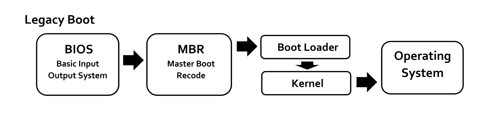

Bindeglied in Boot-Prozess
Basic Input Output System
Power On Self Test
Master Boot Record
0xAA550x7C00
0x7C00-0x7E000x7E00-0xFC00 (~32KiB)| 64bit | 32bit | 16bit | 8bit-h | 8bit-l | Verwendung |
|---|---|---|---|---|---|
| rax | eax | ax | ah | al | Accumulator |
| rbx | ebx | bx | bh | bl | Base |
| rcx | ecx | cx | ch | cl | Counter |
| rdx | edx | dx | dh | dl | Data |
| rbp | ebp | bp | / | / | Base pointer |
| rsp | esp | sp | / | / | Stack pointer |
| rip | eip | ip | / | / | Instruction pointer |
__asm__,
*(u8*)0x7E00), kein Interpreter
org 0x7C00
bits 16
mbr:
; Register leeren (manche BIOS sind komisch)
xor bx, bx
mov ds, bx
mov es, bx
mov ss, bx
; Manche Register sind wichtig (z.B. dl mit boot disk)
mov sp, 0x7C00 ; Stack: 0x7C00 -> wächst nach unten
; Text mode VGA mit BIOS interrupts leeren
mov ax, SCREEN_CLEAR
int SCREEN_INT
call disk_support ; Ist disk unterstützt?
jmp load_stage ; 2. Stage laden und ausführen
bits 16
load_stage:
mov bx, loader
mov [dap.dest], bx
call disk_read ; Nutzt dap, dl und BIOS INTs
lgdt [gdt] ; Lade GDT
; Protected mode (32-Bit)
mov eax, cr0
or ax, 1 ; PE (Protection Enable) Bit
mov cr0, eax
; 0x08 GDT offset -> 1. Eintrag -> Code segment (cs)
jmp 0x08:protected
bits 32
protected:
; Segment register auf 2. GDT Eintrag (non-executable)
mov ax, 0x10
mov ds, ax
mov es, ax
mov fs, ax
mov gs, ax
mov ss, ax
push dx ; Disk (in dl) zu kernel pushen
call loader ; Zweite Stage!
[...]
dw 0xAA55 ; MBR magic
loader: incbin "build/loader.bin" ; 2. Stage (C)
Bilder
Informationen (aufgerufen 13.07.2021)